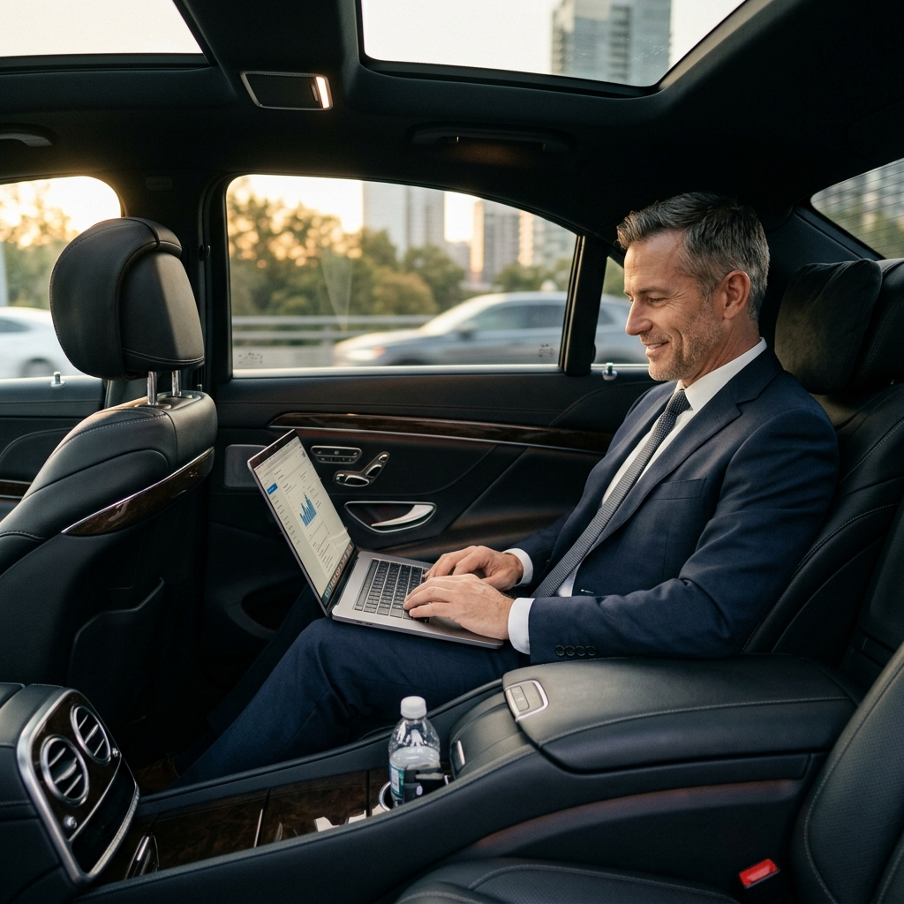

Transforme o Trânsito de São Paulo de um Dreno de Produtividade para o seu Gabinete em Movimento.
Para executivos C-Level que não podem perder tempo ou arriscar seu sigilo corporativo. A Gestão de Mobilidade de Luiz Antonio oferece ferramentas estruturadas para reduzir o dreno de produtividade e criar previsibilidade absoluta — sem os riscos ocultos da "economia de bicos" dos aplicativos genéricos.

Depois- O "Serviço Silencioso" para proteção de sigilo corporativo
- Santuário Híbrido (BYD King GS)
- Mapeamento cognitivo sênior (Evitação proativa de riscos)
O Custo Silencioso da Mobilidade Imprevisível
O Dreno de Produtividade
"O que mais me frustra é perder 3 horas por dia olhando para luzes de freio. Meu tempo como executivo custa muito caro, e o trânsito se tornou um dreno financeiro inaceitável de mais de R$ 720.000 anuais para a minha empresa em horas ociosas."
A Roleta da Economia de Bicos
"Sempre que peço um aplicativo comum, é uma roleta russa. Plataformas entregam motoristas aleatórios sem verificações profundas, diluindo minha segurança corporativa e pessoal em algoritmos que não conheço."
Violação de Protocolo Corporativo
"Vazamento de informações no banco de trás é meu maior medo. Não posso discutir fusões ou abrir balanços financeiros em um carro de aplicativo porque não faço ideia de quem está na frente escutando."
Muitas empresas assumem que usar contas corporativas em aplicativos genéricos é uma forma inteligente de "reduzir custos" ou que perder horas no trânsito é uma fatalidade inevitável de São Paulo. Na realidade, a falta de protocolo e as horas improdutivas tornam essa escolha a maior falha de compliance de uma rotina corporativa.
Imagine Transformar as Horas Perdidas em Pura Produtividade
Recuperação de Receita (ROI)
Você entra no veículo e o trabalho flui. Ao transformar o carro em uma extensão do seu escritório, você recupera até 70% do tempo perdido, gerando um retorno projetado de R$ 504.000 anuais para a empresa. O serviço se paga instantaneamente.
Segurança Proativa
Você nunca fica ilhado. Baseado em mais de 40 anos de mapeamento cognitivo do trânsito paulistano, rotas alternativas reais são tomadas para evitar vias de alagamento crônico (pancadas de chuva) e protestos antes mesmo do GPS notar o gargalo.
A "Ausência Presente"
Suas reuniões confidenciais permanecem 100% seguras. Garantimos a "Ausência Presente": extrema atenção às vias e total surdez protocolar para os assuntos da cabine. O que é discutido no carro, fica no carro.
E se a mobilidade deixasse de ser um gargalo logístico exaustivo e se tornasse o ambiente mais focado do seu dia? Isso não requer frotas milionárias — requer apenas a união da maturidade de um profissional sênior com um veículo de excelência.
Conheça o Ativo Estratégico: Luiz Antonio e o Santuário Híbrido
Nascido em 1959, Luiz Antonio representa o padrão-ouro da proteção executiva. Uma solução que une a estabilidade psicológica e a aversão ao risco de um profissional sênior com a engenharia de ponta de um sedã híbrido BYD King GS.
Compliance & Reserva
Operação transparente com verificação de identidade (CPF: 942.116.638-87).
A Fase de Trânsito
Embarque em um ambiente com "frenagem progressiva", anulando solavancos e permitindo leitura contínua.
Desembarque Estratégico
Chegada pontual aos seus Roadshows ou Aeroportos, focado e livre de fadiga decisória.
Atendimento LATAM (ES Fluente)
Conectividade Wi-Fi e Clima Independente
Integridade Legal (Background Limpo)
Direção Defensiva Sênior
"A inteligência artificial do Waze traça a rota mais rápida, mas não possui o julgamento que 40 anos de experiência trazem para saber qual rua é realmente segura. Minha missão é garantir a você um ambiente seguro para tomar grandes decisões."
— Luiz Antonio
Especialista em Mobilidade Executiva Premium
Não entregue sua segurança e seu tempo a algoritmos.
Agende seu atendimento agora.
Soluções Modulares de Mobilidade
Serviços logísticos desenhados milimetricamente para a rotina da alta gestão, turismo de luxo e cuidados de saúde premium em São Paulo.
Roadshows Financeiros
Disponibilidade integral do veículo e motorista para agendas intensas de reuniões nos eixos Faria Lima, Vila Olímpia e Berrini. Você foca no negócio, nós cuidamos do relógio.
Transfers Estratégicos
Recepção pontual e monitoramento de voos em tempo real para Guarulhos (GRU), Congonhas (CGH) e Viracopos (VCP), além de hotéis 5 estrelas da cidade.
Saúde Premium
Atendimento cuidadoso e paciente para check-ups e intervenções no Hospital Albert Einstein e Sírio-Libanês. Foco total no conforto do paciente.
Dossiê de Mobilidade Corporativa
Material de aprofundamento estratégico sobre transporte premium e proteção executiva.
Agendamento Privativo
Reserve seu atendimento executivo de forma rápida e discreta.
Passo 1 — Selecione o mês de interesse
Passo 2 — Escolha o dia
Passo 3 — Escolha o horário
Prefere falar diretamente? Entre em contato com a nossa gestão.
Conversar no WhatsApp (11 95456-6078)